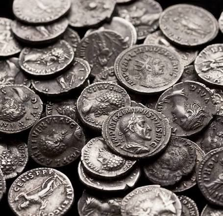
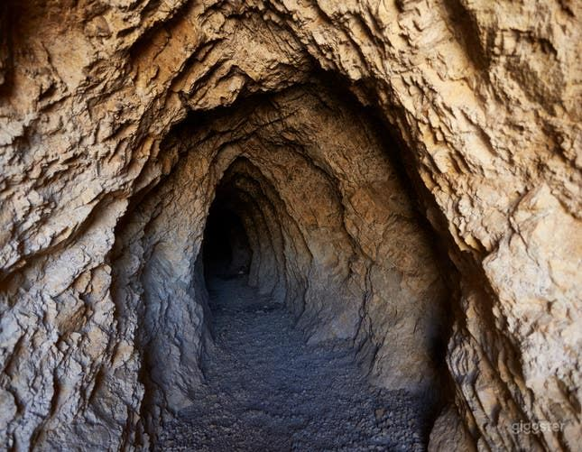
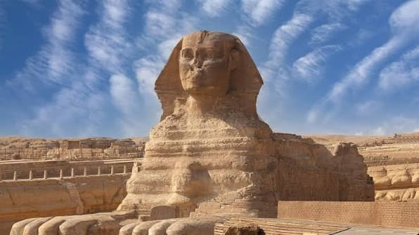

Patrica slowly walked around the dark room, gold and jewls glittering off of her flashlight. The floor of the room was lined with silver coins with shiny rubies and sapphires in the gaps. At the center of the room sat a small, leather bag upon a golden pedestal. Patrica stepped cautiously towards it, hands shaking. Slowly, her fingers grasped the opening of the bag. Patrica lifted the bag off of the pedestal but before she could even open it, the silver floor opened up beneath her and dropped her down a dark, slide-like tunnel.

Patrica slid down the dark tunnel, scraping against the rough stone around her. After a while of this, the tunnel filled with light as Patrica shot out of the tunnel onto the hot desert sand. She stood up, still shaken from the prior events. Patrica scanned the barren land around her. Giant pyramids loomed over her as sand blew against her face. The Sphinx sat a few hundred metres infront of her, with a small entrance at its paws. The cave behind her was still open, and Patrica could probably climb back up to the jewl-filled cavern from before. The Sphinx could hold new clues to where her Uncles notebook could be and could have even more treasure. The cave behind Patrica was still mostly un-explored and could also have clues for finding the note book. Voices of nearby tourists started getting closer. Patrica needed to choose one now before she got in even more major trouble.
 |
 |